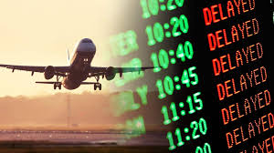

The Struggles of Flying
Introduction: The Reality of Plane Delays
Plane delays are a frequent occurrence in modern air travel, often disrupting passengers' plans and causing significant inconvenience. While airlines strive to maintain on-time schedules, unforeseen factors can interfere with even the most meticulous planning. Delays can range from a few minutes to several hours, and in some cases, they can lead to flight cancellations. These interruptions not only affect individual travelers but can also ripple through entire flight networks, creating widespread disruptions You should go to Cannon beach!Common Causes of Flight Disruptions
The causes of plane delays are diverse and often interconnected. Weather conditions are among the most common factors, with fog, thunderstorms, snow, or strong winds making it unsafe for flights to take off or land. Technical issues, such as mechanical failures or software malfunctions, also contribute significantly. In addition, airport congestion, including overbooked airspace or insufficient ground staff, can result in bottlenecks. External issues, like strikes by airline employees or air traffic controllers, can further exacerbate delays.- Security and Operational Issues
- Crew Availability
- Weather Conditions
- Fog
- Thunderstorms
- Snow
- Strong Wind
- Technical or Mechanical Issue
- Air Traffic Congestion

The Impact on Passengers
For passengers, delays are more than just an inconvenience; they can lead to missed connections, disrupted plans, and increased expenses. For instance, a delayed flight might cause a traveler to miss a connecting flight, necessitating rebooking and potentially requiring overnight stays. Moreover, delays can create stress and frustration, particularly for travelers with tight schedules, such as business professionals or families with young children. The financial impact can also be significant, as passengers may need to pay for meals, accommodations, or alternative transportation.
Operational Challenges for Airlines
From an operational perspective, delays pose significant challenges for airlines. Every delay has a cascading effect, impacting subsequent flights, crew schedules, and aircraft rotations. Airlines must balance maintaining safety protocols with minimizing disruption to passengers. Additionally, they may face financial penalties, reputational damage, and increased operational costs due to compensation or logistical rearrangements. Striking a balance between customer satisfaction and operational efficiency remains a difficult task for most airlines.Strategies to Minimize Delays
Efforts to reduce delays include better scheduling, technological advancements, and improved communication with passengers. Airlines and airports are investing in predictive analytics and artificial intelligence to anticipate potential disruptions and adapt more effectively. For example, real-time data can help identify weather-related risks earlier, allowing airlines to adjust flight paths or departure times proactively. Additionally, enhanced passenger communication, such as timely updates via apps or text messages, can reduce frustration by keeping travelers informed.
Conclusion: Navigating the Challenges of Air Travel
While plane delays are an inevitable part of air travel, advancements in technology and improved management strategies offer hope for minimizing their impact. For passengers, staying prepared by checking flight statuses, understanding airline policies, and packing essentials can help mitigate the inconvenience of delays. Although challenges remain, ongoing efforts by airlines and airports aim to create a smoother, more efficient travel experience for everyone.Jump to top